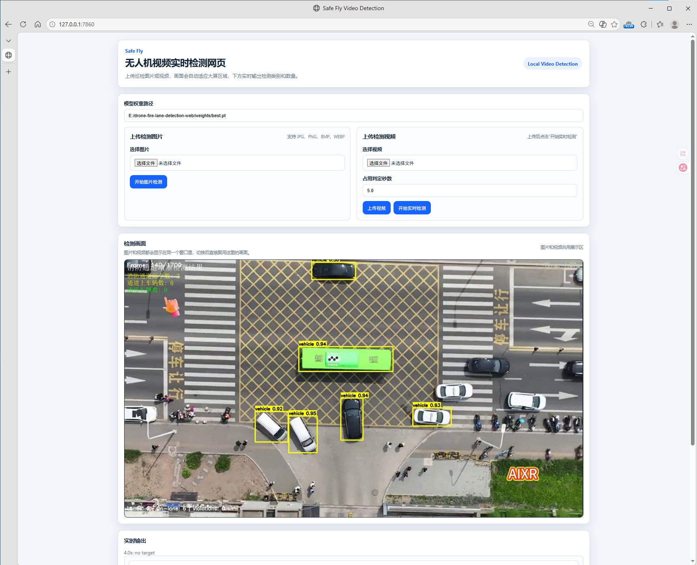
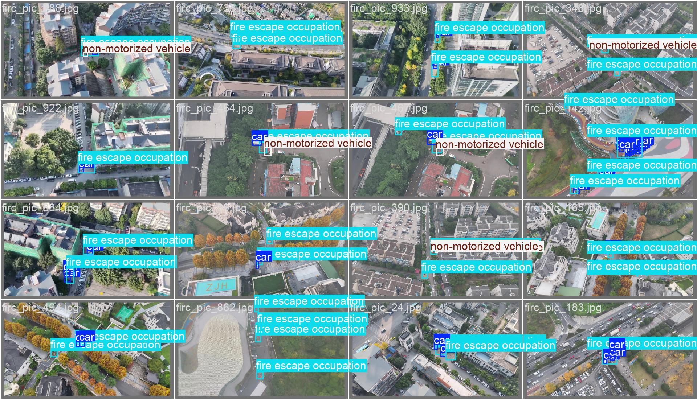
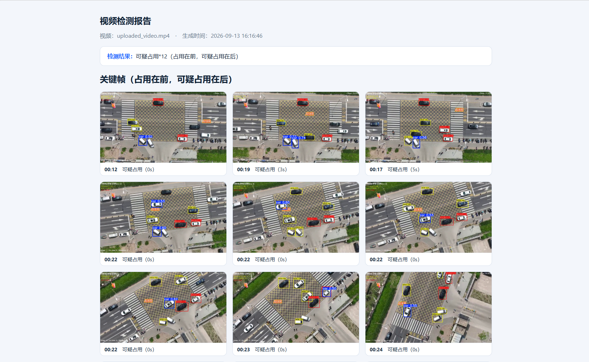
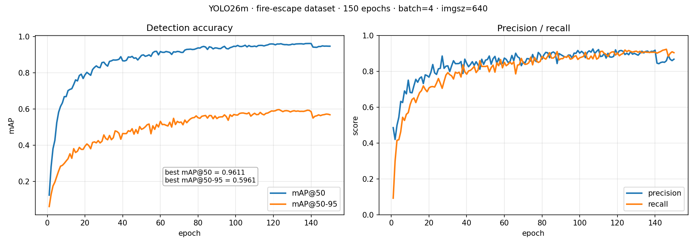
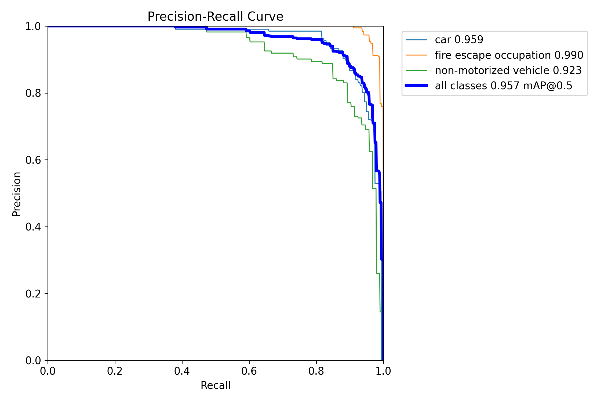
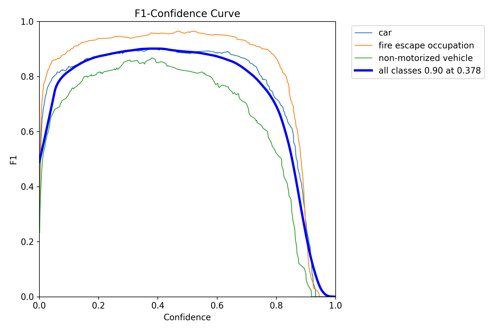
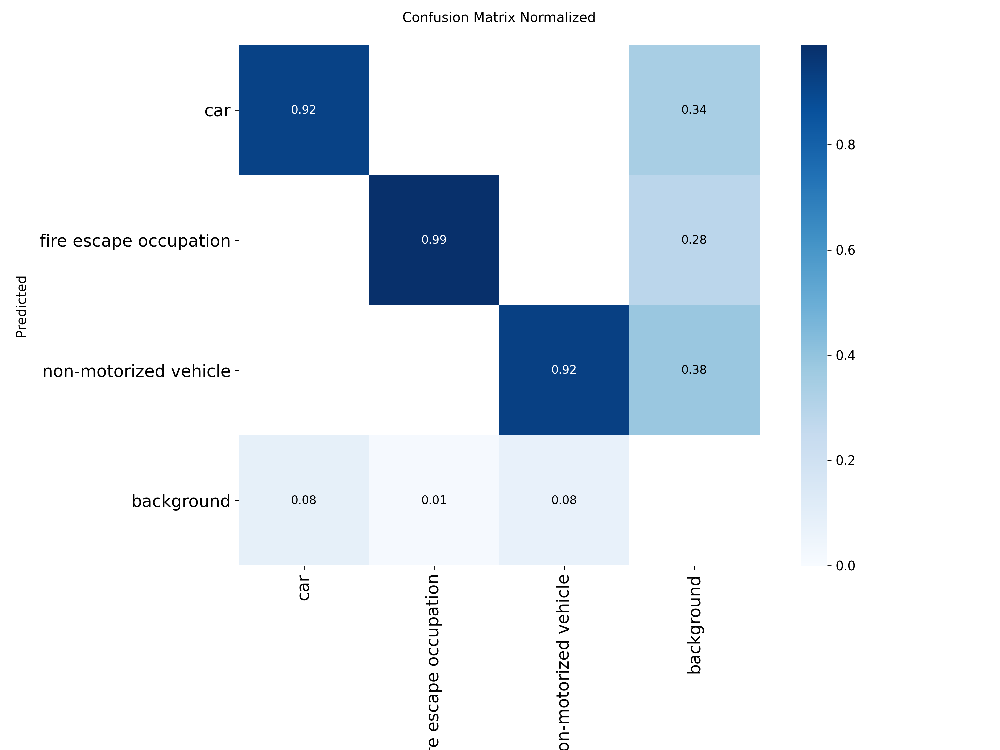

The problem
A blocked fire lane costs minutes that emergency crews do not have. Traditional inspection means someone walking the estate or scrubbing through hours of recorded video — slow, easy to skip, and hard to turn into evidence.
A drone solves the capture side: one flight covers a whole compound from above, with no parked cars blocking the view of the lane markings. This project solves the other half — converting that footage into annotated frames, occupancy durations, and a report someone can act on.
How it works
Four steps, one workflow. A human stays in the loop at the last step.
Capture
Drone footage of fire lanes and no-parking zones, recorded from an elevated, unobstructed viewpoint.
Detect
A fine-tuned YOLO26m model labels vehicles, non-motorized vehicles, and the occupied lane area frame by frame.
Review
A Flask web app streams the annotated video next to live per-class counts, so an inspector can watch the result.
Report
Targets persisting past a configurable threshold are kept as keyframes and written into a self-contained HTML report.
The system
One page, two input modes — still images and video share the same result area, so the workflow does not change when the evidence does.



Training & evaluation
YOLO26m fine-tuned for 150 epochs on 944 drone-view images from the firc-dataset
(3 classes, 4,567 boxes), split 755 / 94 / 95. Validation set: 94 images, 440 instances.
| Metric | Value | Note |
|---|---|---|
| mAP@50 | 0.958 | best epoch 0.961 |
| mAP@50-95 | 0.596 | best epoch 0.596 |
| Precision | 0.911 | best epoch 0.924 |
| Recall | 0.899 | best epoch 0.922 |
| F1 (all classes) | 0.90 | at confidence 0.378 |



